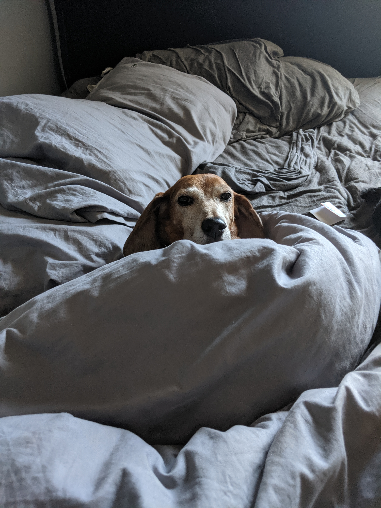

About
Sir Norman Baxter the Reagal Beagle is a 6 year old male red beagle. I adopted him from the Atlanta Humane Society 1.5 years ago. Sir Norman Baxter had only been at the shelter for 5 days when we met. He was transferred from a shelter in North Carolina. Sir Norman had been at that shelter for 9 weeks. Sir Norman Baxter had been diagnosed with heart worms and no one was willing to take a chance on him. Unitil I came along.
Playtime
Sir Norman Baxter is not your typical Beagle Boy. There are several sub-types of beagle. They were all bred for hunting. This means Beagles are usually high energy all the time. Beagles have a distinctive throaty howl that can be heard from quite a distance away. Sir Norman Baxter does not like to play, run, or howl. His idea of playtime is laying lazily at my feet while I work or watch tv.
Nutrition
Sir Norman Baxter was 20lbs when I adopted him. After completing his heartworm treatment Sir Norman Baxter gained 7lbs and has been holding steady at 27lbs ever since. Sir Norman Baxter has a very sensitive constitution. Table food often leads to him having an upset stomach, but he does not let this stop him from seaking it out at every opportunity. On a typical day Sir Norman Baxter will eat 1 cup of dry dogfood for breakfast, a dental chew for lunch, and 1 cup of dry dogfood mixed with a 1/2 cup of wet dogfood for dinner.
Exercise
As stated before Sir Norman Baxter is not your typical beagle. As hunting dogs beagles generally like to run long sprints. In a hunting context this would be great for flushing out prey or running down an injured animal. Sir Norman Baxter's exercise consistes of two 1 mile works per day at a leisurly pace. For Sir Norman, walks are all about the smells. His nose us to ground for most of his walks. He enjoys sniffing plants, mailbox posts, random items on the side of the road, and of course other Dogs.
Gallery

The Ragal Beagle on his throne

Upside Down Clown has come to town.

Yes, I've had a nap, but what about 2nd nap?